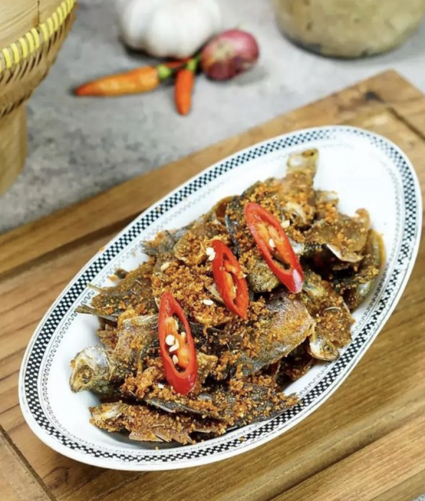
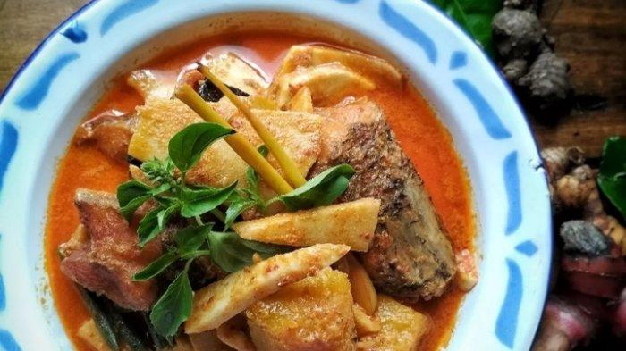

Gangan Asam Banjar
Sup asam segar khas Kalimantan Selatan yang biasanya dimasak dengan ikan haruan atau patin dan bumbu rempah segar.
Bahan-bahan:
- 500 gr ikan haruan (bisa diganti ikan patin), potong-potong
- 1 liter air
- 5 siung bawang merah
- 3 siung bawang putih
- 2 buah tomat, potong-potong
- 3 buah belimbing wuluh atau 1 sdm asam jawa
- 2 cm jahe, memarkan
- 2 batang serai, memarkan
- 2 lembar daun salam
- Garam dan gula secukupnya
Cara membuat:
- Haluskan bawang merah dan bawang putih, tumis hingga harum.
- Masukkan jahe, serai, dan daun salam ke dalam tumisan, aduk sebentar.
- Didihkan air, lalu masukkan bumbu tumis dan potongan ikan.
- Tambahkan tomat dan belimbing wuluh atau asam jawa.
- Masak hingga ikan matang dan bumbu meresap. Tambahkan garam dan gula sesuai selera.
- Sajikan panas dengan nasi putih.
Ketupat Kandangan
Ketupat disajikan dengan lauk ikan gabus kuah santan pedas khas Kandangan.
Bahan-bahan:
- 500 gr ikan gabus, potong
- 2 buah ketupat
- 500 ml santan kelapa
- 5 siung bawang merah
- 3 siung bawang putih
- 5 buah cabai merah keriting
- 2 lembar daun salam
- 2 batang serai, memarkan
- Garam dan gula secukupnya
- Minyak untuk menumis
Cara membuat:
- Tumis bawang merah, bawang putih, dan cabai hingga harum.
- Masukkan daun salam dan serai, aduk sebentar.
- Tambahkan ikan gabus, masak hingga berubah warna.
- Tuang santan, masak dengan api kecil hingga mengental.
- Beri garam dan gula, koreksi rasa.
- Sajikan dengan ketupat hangat.

Iwak Pakasam Goreng
Ikan fermentasi khas Kalimantan Selatan yang digoreng kering dan disajikan dengan sambal pedas, gurih dan unik.
Bahan-bahan:
- 4 ekor iwak pakasam (ikan fermentasi, bisa ikan sepat/haruan)
- 2 siung bawang putih, iris tipis
- 2 siung bawang merah, iris tipis
- 5 buah cabai rawit, iris serong
- Minyak goreng secukupnya
- Nasi putih untuk penyajian
Cara membuat:
- Cuci bersih iwak pakasam lalu goreng dalam minyak panas hingga garing. Angkat dan tiriskan.
- Tumis bawang putih, bawang merah, dan cabai rawit hingga harum dan agak garing.
- Masukkan ikan goreng ke dalam tumisan, aduk sebentar agar bumbu meresap.
- Sajikan panas dengan nasi putih dan sambal sebagai pelengkap.

Gangan Humbut
Sayur bersantan dari umbut kelapa muda khas Kalimantan Selatan yang gurih dan kaya rempah.
Bahan-bahan:
- 500 gr umbut kelapa muda, iris tipis
- 400 ml santan
- 5 siung bawang merah
- 3 siung bawang putih
- 5 buah cabai merah keriting
- 2 cm lengkuas, memarkan
- 2 lembar daun salam
- Garam dan gula secukupnya
- Minyak untuk menumis
Cara membuat:
- Haluskan bawang merah, bawang putih, dan cabai merah.
- Tumis bumbu halus bersama lengkuas dan daun salam hingga harum.
- Masukkan umbut kelapa, aduk rata hingga layu.
- Tuang santan, masak dengan api kecil hingga mendidih dan umbut lunak.
- Bumbui dengan garam dan gula sesuai selera, sajikan hangat.
Amparan Tatak
Kue tradisional Banjar dari tepung beras dan santan dengan tekstur kenyal dan rasa manis.
Bahan-bahan:
- 250 gr tepung beras
- 200 ml santan
- 150 gr gula merah, serut halus
- 1/2 sdt garam
- Daun pisang untuk membungkus
Cara membuat:
- Campur tepung beras, santan, gula merah, dan garam hingga rata.
- Tuang adonan ke daun pisang yang sudah dilapisi minyak.
- Kukus selama 30 menit hingga matang dan mengeras.
- Potong-potong dan sajikan sebagai camilan tradisional.
Manday
Hidangan olahan ikan patin khas Kalimantan Selatan dengan kuah santan gurih dan pedas.
Bahan-bahan:
- 500 gr ikan patin, potong
- 400 ml santan
- 5 siung bawang merah
- 3 siung bawang putih
- 10 buah cabai rawit
- 2 lembar daun salam
- 1 batang serai, memarkan
- Garam dan gula secukupnya
- Minyak untuk menumis
Cara membuat:
- Tumis bawang merah, bawang putih, dan cabai hingga harum.
- Masukkan daun salam dan serai, aduk sebentar.
- Tambahkan ikan patin, aduk rata.
- Tuang santan, masak dengan api kecil hingga ikan matang dan kuah mengental.
- Beri garam dan gula sesuai selera, sajikan hangat.